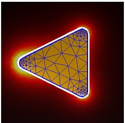

Green functions
Green functions are at the heart of the BEM approach but are usually hidden inside the BEM solvers. In some cases, for instance when computing electromagnetic fields or potentials away from the particle boundaries, one has to set them up explicitly.
Contents
Initialization
% initialize Green function object
g = greenfunction( pt, p, op, PropertyPair );
In the initialization, the following parameters and properties are used
- pt is a comparticle or compoint object for the positions where the field or potential should be computed.
- p is a comparticle object.
- op is a structure with additional MNPBEM options that control the particle integration.
greenfunction is a wrapper function that selects from the options and property settings one of several classes.
Methods
Once the greenfunctions object is initialized, one can compute the fields and potentials for a given surface charge sig according to
% compute electromagnetic fields f = field( g, sig ); % compute potentials pot = potential( g, sig );
f and pot are compstruct objects that hold the electromagnetic fields or potentials.
Example
In the following example we show how to compute an electric field map for a nanotriangle illuminated by a plane wave from above
% BEM options op = bemoptions( 'sim', 'stat' ); % triangular particle [ p, poly ] = tripolygon( round( polygon( 3, 'size', [ 30, 30 ] ) ), edgeprofile( 5 ) ); % make COMPARTICLE object p = comparticle( { epsconst( 1 ), epstable( 'silver.dat' ) }, { p }, [ 2, 1 ], 1, op ); % polygons for plate around nanoparticle poly1 = shiftbnd( set( poly, 'z', 0 ), 1 ); poly2 = polygon3( polygon( 4, 'size', [ 50, 50 ] ), 0 ); % make plate around triangle p2 = plate( [ poly1, poly2 ] ); % plane wave excitation exc = planewave( [ 1, 0, 0 ], [ 0, 0, 1 ], op ); % set up BEM solver bem = bemsolver( p, op ); % compute surface charge sig = bem \ exc( p, 600 ); % set up Green function object between vertices of plate and particle g = greenfunction( compoint( p, p2.verts, op ), p, op ); % compute induced electric field f = field( g, sig ); % final plot plot( p, 'EdgeColor', 'b' ); plot( p2, vecnorm( f.e ) ); axis equal off colormap hot( 255 );

Copyright 2017 Ulrich Hohenester